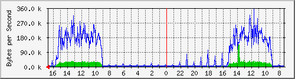
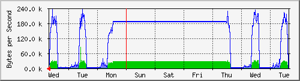

PERISUR-SEMOVI
| System: | MRTG |
| Maintainer: | dangelesc@finanzas.cdmx.gob.mx |
| Description: | GigabitEthernet2/37 D.Semovi-L2L |
| ifType: | ethernetCsmacd (6) |
| ifName: | Gi2/37 |
| Max Speed: | 12.5 MBytes/s |
| Ip: | No Ip (No DNS name) |
Estadísticas actualizadas el Miércoles 16 de Junio de 2021 a las 16:45,
'Core_Perisur.finanzas.df.gob.mx' ha estado funcionando durante 434 days, 21:33:09.
Gráfico diario (5 minutos : Promedio)

|
Máx |
Promedio |
Actual |
| Entrante: |
133.9 kB/s (1.1%) |
11.0 kB/s (0.1%) |
481.0 B/s (0.0%) |
| Saliente: |
351.4 kB/s (2.8%) |
69.0 kB/s (0.6%) |
502.0 B/s (0.0%) |
Gráfico semanal (30 minutos : Promedio)

|
Máx |
Promedio |
Actual |
| Entrante: |
84.1 kB/s (0.7%) |
17.0 kB/s (0.1%) |
1995.0 B/s (0.0%) |
| Saliente: |
237.0 kB/s (1.9%) |
117.8 kB/s (0.9%) |
8039.0 B/s (0.1%) |
Gráfico mensual (2 horas : Promedio)

|
Máx |
Promedio |
Actual |
| Entrante: |
39.8 kB/s (0.3%) |
9828.0 B/s (0.1%) |
27.5 kB/s (0.2%) |
| Saliente: |
233.5 kB/s (1.9%) |
66.4 kB/s (0.5%) |
185.2 kB/s (1.5%) |
Gráfico anual (1 día : Promedio)
|
Máx |
Promedio |
Actual |
| Entrante: |
26.5 kB/s (0.2%) |
5670.0 B/s (0.0%) |
8078.0 B/s (0.1%) |
| Saliente: |
186.1 kB/s (1.5%) |
36.7 kB/s (0.3%) |
48.5 kB/s (0.4%) |
| VERDE ### |
Entrante:coming Traffic in Bytes per Second |
| AZUL ### |
Saliente:going Traffic in Bytes per Second |